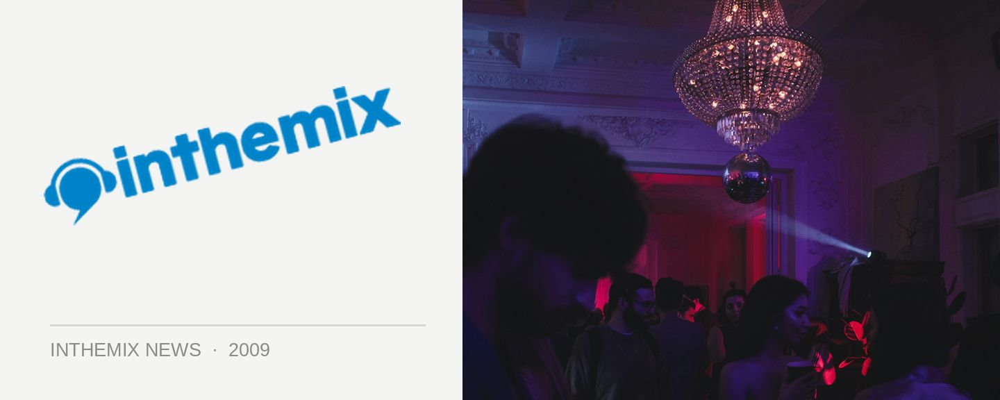

TV Rock - "We're going back to making records for the clubs"
“It’s been a tough marriage for us. I’m the first to admit that when we’ve tried to be commercial in the past, it just hasn’t worked for us really. We’ve tried, probably let ourselves down and some of our fans too.” A refocus on the clubs is on the cards for TV Rock, production veteran Ivan Gough revealed to ITM this week, on the phone to chat about his and Grant Smillie’s new Neon Records label that has just released its first mix compilation Neon Essential vol. 1.
“We’re going to be putting out some club-only releases soon, which will be more on the dancefloor side of things, rather than tailored for radio,” Ivan told ITM. “We’re doing a lot of stuff with guys like Luke Chable and Chardy down here in Melbourne, and the sort of records they’re making are tech and progressive house, with a lot of it being quite the ‘backroom’ kind of music.”
Ivan Gough is someone with a heritage in underground dance that stretches back nearly two decades, but he admits it’s been challenging to aligning that history with some of TV Rock’s more commercial sensibilities. “We made promise to ourselves around six months ago that we’re sticking to now… I’ve produced plenty of trance and progressive house in the past, and we’ve more or less decided we want to go back to writing the kind of records we would play in our club sets. If we get one that crosses over to radio then good, but we’re not going to actively seek radio records at this point. We’ve got other artists who are doing that; we’re producing for people like Zoe Badwi and we’ve got other artists coming to the label that are well known in the pop scene, who’ll be doing more commercial dance.”
It’ll be an ongoing tightrope walk for TV Rock to strike that balance with their new label, between backroom grooves and radio accessibility. “We want to be able to do both. Obviously if you get a record that’s working in the back room, and then you realise, ‘hang on, this is gonna be a big tune,’ you need to have the mechanisms in place… We’re not afraid of radio. Radio is what allows you to pay the bills. You can’t really do that with underground music, it’s very difficult especially in Australia.”
ITM is currently offering you the chance to win a trip to Melbourne for a DJ lesson with TV Rock, plus Stanton decks setup to the value of $4,000. Click here to enter and check out some of our other Neon coverage below…
> Neon Essential vol. 1 review
> Interview with Grant Smillie
> TV Rock Neon Photo Shoot - Behind The Scenes
> TV Rock your diary – week 1
> TV Rock your diary – week 2
Neon Essential vol. 1 will be launching at the remaining national shows…
Sat 16th May – Warrnambool, Whalers Hotel feat. Ivan Gough / Zoe
Fri 22nd May – Maitland, Huntervally Brewery feat. Ivan Gough / Zoe
Sat 23rd May – Ballarat, 21 Arms feat. Ivan Gough/Zoe
Sat 30th May – Adelaide, HQ feat. TV Rock / Zoe / Chardy
Fri 5th Jun – Wagga Wagga, The Duke Hotel feat. Ivan Gough / Chardy
Fri 5th Jun – Byron Bay, La La Land feat. Grant Smillie / Zoe
Sat 6th Jun – Cairns, Velvet Underground feat. TV Rock
Fri 12th Jun – Coffs Harbour, Plantation Hotel feat. TV Rock
Sat 13th Jun – Sydney, Onelove feat. TV Rock / Zoe / Chardy
Fri 19th Jun – Perth, Limelite feat. TV Rock / Zoe / Chardy
Sat 20th Jun – Gold Coast, Platinum feat. TV Rock / Zoe / Chardy
Fri 26th Jun – Bendigo, Black Swan feat. Chardy / Zoe
Fri 26th Jun – Townsville, The Consortium feat. TV Rock
Sat 27th Jun – Canberra, Academy feat. Chardy / Zoe
Sat 27th Jun – Airlie Beach, Magnums feat. TV Rock